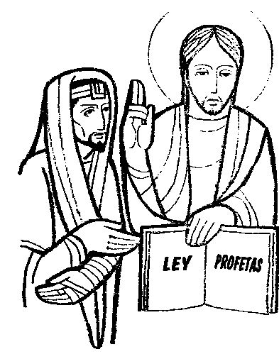
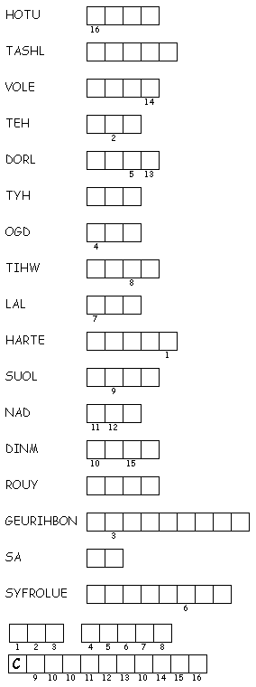

www.logrus.ca Year
A
Proper 25
This week's lessons: Deuteronomy 34:1-12 and Psalm 90:1-6, 13-17 or Leviticus 19:1-2, 15-18 and Psalm 1, 1 Thessalonians 2:1-8, Matthew 22:34-46
Opening prayer by leader, or invite another participant to pray, or use:
Almighty God, who has caused all Holy Scripture to be written for our learning, open our ears and hearts today to learn from your word and from one another, we ask in Jesus' Name. Amen
Set the calendar-clock to the right date. Pentecost is the season of the church's growth, beginning with Pentecost Day which is the birthday of the church, and continuing to the end of the church year.Its colour is green.
Today, the Gospel reviews for us the “Great Commandment”: "'You shall love the Lord your God with all your heart, and with all your soul, and with all your mind.' This is the greatest and first commandment.And a second is like it: 'You shall love your neighbor as yourself.'
What was the sermon on? -
What was the Gospel lesson? -
Did anyone have any insights about...
1. When a person stands as a candidate for parliament, should his religion be part of his platform or advertising?
2. In what ways and on what issues should a Christian in government behave differently from a non-Christian?
3. How can a Christian Member of Parliament honestly and fairly represent her non-Christian constituents?
4. How can you distinguish what belongs to “Caesar” and what belongs to God?
5. In what ways can we express honest disagreement with our leaders and still remain good citizens and representatives of Christ?
.
or
What parallels do you see between this reading and the previous reading(s)?
Pew-work Hand-outs
“Pew-work” is like Home-work, except that it is done in the pews, instead of being done at home. Because it is focussed on the readings (as the sermon, presumably, also is) it can be done during the sermon to help the listener concentrate. Or, it can be done while waiting for everyone else to finish their communion. It isn't done during prayers, or hymns, or the readings, because
During Prayers, we pray
During Hymns, we sing
During the Readings, we listen
Cerezo
Barredo's Lectionary illustrations --
http://www.servicioskoinonia.org/cerezo/dibujosA/53OrdinarioA30.jpg

Misioneros
del Sagrado Corazón en el Perú: From
http://www.mscperu.org/grafic/graficoslit/aTO/picAto/24_to_a.jpg
P
R O P H E T S N R S V
|
(Matthew 22:37-40 NRSV) |
Word List |
frhttp://www.efree.mb.ca/lectionarypuzzles.com free to distribute for free with this notice. Words are in a straight line left to right or top to bottom |
||
34After Jesus had made the Sadducees look foolish, the Pharisees heard about it and got together. 35One of them was an expert in the Jewish Law. So he tried to test Jesus by asking, 36"Teacher, what is the most important commandment in the Law?" 37Jesus answered:
Love the Lord your God with all your heart, soul, and mind. 38This is the first and most important commandment. 39The second most important commandment is like this one. And it is, "Love others as much as you love yourself." 40All the Law of Moses and the Books of the Prophets are based on these two commandments.
Who had Jesus been talking to? ________________________________________________
What question did the teacher of the law ask Jesus? ________________________________ ___________________________________________________________________________
3. What did Jesus say was the most important commandment? _______________________ _________________________________________________________________________________________________________________________________________________________________________________________________________________________________
4. What did Jesus say was the second most important commandment? _________________ ______________________________________________________________________________________________________________________________________________________
Questions taken from Sunday School Lessons; http://www.sundayschoollessons.com/baplord.htm_
Middle-School Pew-work
|
 |
34But when the Pharisees had heard that he had put the Sadducees to silence, they were gathered together. 35Then one of them, which was a lawyer, asked him a question, tempting him, and saying, |
37Jesus said unto him, Thou shalt love the Lord thy God with all thy heart, and with all thy soul, and with all thy mind. 38This is the first and great commandment. 39And the second is like unto it, Thou shalt love thy neighbour as thyself. |
|
How do you love God with “all your heart” --
what do you do, what does it feel like?
___________________________________________
_____________________________________________________________________________________________________________________________________________________________________________________________________________________________________________________________________________________________________________________________________________________________________ |
||
|
What Scripture is the Sermon is based on? |
__________________________________ |
|
What is the main point of the Sermon? |
__________________________________ |
|
Write down any figures of speech used by the preacher (Metaphors, Similes, hyperbole) |
__________________________________ |
|
Write down any new, unusual or particularly interesting words the preacher uses |
_______________
|
Focus Statement: “You shall love the Lord your God with all your heart, and with all your soul, and with all your mind.”
|
_________________________________________ |
|
_________________________________________ |
|
_________________________________________ |
|
_________________________________________ |
|
_________________________________________ |
Next week: Joshua 3:7-17 and Psalm 107:1-7, 33-37 OR Micah 3:5-12 and Psalm 43; 1 Thessalonians 2:9-13; Matthew 23:1-12